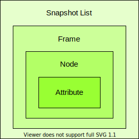

Data Model¶
The data model of MARO provides a declarative interface. We choose Python as the frontend language for saving development cost, and we take C as the backend language for improving the execution reference. What’s more, the backend store is a pluggable design, user can choose different backend implementation based on their real performance requirement and device limitation.
Currenty there are two data model backend implementation: static and dynamic. Static implementation used Numpy as its data store, do not support dynamic attribute length, the advance of this version is that its memory size is same as its declaration. Dynamic implementation is hand-craft c++. It supports dynamic attribute (list) which will take more memory than the static implementation but is faster for querying snapshot states and accessing attributes.
Key Concepts¶
As shown in the figure above, there are some key concepts in the data model:
Node is the abstraction of the resource holder, which is usually the major business instance of the scenario (i.e. vessels and ports in CIM scenario). A node usually has various attributes to present the business nature.
(Slot) Attribute is the abstraction of business properties for the scenarios-specific resource holder (node). The attributes of a node could be declared as different data types based on the real requirements. Furthermore, for each attribute, a
slotfeature is provided to support the fixed-size array. Theslotnumber can indicate the attribute values (e.g. the three different container types in CIM scenario) or the detailed categories (e.g. the ten specific products in the Use Case below). By default, theslotvalue is one. As for the dynamic backend implementation, an attribute can be marked as is_list or is_const to identify it is a list attribute or a const attribute respectively. A list attribute’s default slot number is 0, and can be increased as demand, max number is 2^32. A const attribute is designed for the value that will not change after initialization, e.g. the capacity of a port/station. The value is shared between frames and will not be copied when taking a snapshot.Frame is the collection of all nodes in the environment. The historical frames present the aggregated state of the environment during a specific period, while the current frame hosts the latest state of the environment at the current time point.
Snapshot List is the dumped frames based on a pre-defined resolution. It captures the aggregated changes of the environment between the dump points.
Use Case¶
Below is the declaration of a retail frame, which includes warehouse and store nodes.
from maro.backends.backend import AttributeType from maro.backends.frame import node, NodeAttribute, NodeBase, FrameNode, FrameBase TOTAL_PRODUCT_CATEGORIES = 10 TOTAL_STORES = 8 TOTAL_WAREHOUSES = 2 TOTAL_SNAPSHOT = 100 @node("warehouse") class Warehouse(NodeBase): inventories = NodeAttribute(AttributeType.Int, TOTAL_PRODUCT_CATEGORIES) shortages = NodeAttribute(AttributeType.Int, TOTAL_PRODUCT_CATEGORIES) def __init__(self): self._init_inventories = [100 * (i + 1) for i in range(TOTAL_PRODUCT_CATEGORIES)] self._init_shortages = [0] * TOTAL_PRODUCT_CATEGORIES def reset(self): self.inventories[:] = self._init_inventories self.shortages[:] = self._init_shortages @node("store") class Store(NodeBase): inventories = NodeAttribute(AttributeType.Int, TOTAL_PRODUCT_CATEGORIES) shortages = NodeAttribute(AttributeType.Int, TOTAL_PRODUCT_CATEGORIES) sales = NodeAttribute(AttributeType.Int, TOTAL_PRODUCT_CATEGORIES) def __init__(self): self._init_inventories = [10 * (i + 1) for i in range(TOTAL_PRODUCT_CATEGORIES)] self._init_shortages = [0] * TOTAL_PRODUCT_CATEGORIES self._init_sales = [0] * TOTAL_PRODUCT_CATEGORIES def reset(self): self.inventories[:] = self._init_inventories self.shortages[:] = self._init_shortages self.sales[:] = self._init_sales class RetailFrame(FrameBase): warehouses = FrameNode(Warehouse, TOTAL_WAREHOUSES) stores = FrameNode(Store, TOTAL_STORES) def __init__(self): # If your actual frame number was more than the total snapshot number, the old snapshots would be rolling replaced. # You can select a backend implementation that will fit your requirement. super().__init__(enable_snapshot=True, total_snapshot=TOTAL_SNAPSHOT, backend_name="static/dynamic")
The operations on the retail frame.
retail_frame = RetailFrame() # Fulfill the initialization values to the backend memory. for store in retail_frame.stores: store.reset() # Fulfill the initialization values to the backend memory. for warehouse in retail_frame.warehouses: warehouse.reset() # Take a snapshot of the first tick frame. retail_frame.take_snapshot(0) snapshot_list = retail_frame.snapshots print(f"Max snapshot list capacity: {len(snapshot_list)}") # Query sales, inventory information of all stores at first tick, len(snapshot_list["store"]) equals to TOTAL_STORES. all_stores_info = snapshot_list["store"][0::["sales", "inventories"]].reshape(TOTAL_STORES, -1) print(f"All stores information at first tick (numpy array): {all_stores_info}") # Query shortage information of first store at first tick. first_store_shortage = snapshot_list["store"][0:0:"shortages"] print(f"First store shortages at first tick (numpy array): {first_store_shortage}") # Query inventory information of all warehouses at first tick, len(snapshot_list["warehouse"]) equals to TOTAL_WAREHOUSES. all_warehouses_info = snapshot_list["warehouse"][0::"inventories"].reshape(TOTAL_WAREHOUSES, -1) print(f"All warehouses information at first tick (numpy array): {all_warehouses_info}") # Add fake shortages to first store. retail_frame.stores[0].shortages[:] = [i + 1 for i in range(TOTAL_PRODUCT_CATEGORIES)] retail_frame.take_snapshot(1) # Query shortage information of first and second store at first and second tick. store_shortage_history = snapshot_list["store"][[0, 1]: [0, 1]: "shortages"].reshape(2, -1) print(f"First and second store shortage history at the first and second tick (numpy array): {store_shortage_history}")
Supported Attribute Data Type¶
All supported data types for the attribute of the node:
Attribute Data Type |
C Type |
Range |
|---|---|---|
Attribute.Byte |
char |
-128 .. 127 |
Attribute.UByte |
unsigned char |
0 .. 255 |
Attribute.Short (i2) |
short |
-32,768 .. 32,767 |
Attribute.UShort |
unsigned short |
0 .. 65,535 |
Attribute.Int (i4) |
int32_t |
-2,147,483,648 .. 2,147,483,647 |
Attribute.UInt (i4) |
uint32_t |
0 .. 4,294,967,295 |
Attribute.Long (i8) |
int64_t |
-9,223,372,036,854,775,808 .. 9,223,372,036,854,775,807 |
Attribute.ULong (i8) |
uint64_t |
0 .. 18,446,744,073,709,551,615 |
Attribute.Float (f) |
float |
-3.4E38 .. 3.4E38 |
Attribute.Double (d) |
double |
-1.7E308 .. 1.7E308 |
Advanced Features¶
For better data access, we also provide some advanced features, including:
Attribute value change handler: It is a hook function for the value change event on a specific attribute. The member function with the
_on_{attribute_name}_changednaming pattern will be automatically invoked when the related attribute value changed. Below is the example code:from maro.backends.frame import node, NodeBase, NodeAttribute @node("test_node") class TestNode(NodeBase): test_attribute = NodeAttribute("i") def _on_test_attribute_changed(self, value: int): pass
Snapshot list slicing: It provides a slicing interface for querying temporal (frame), spatial (node), intra-node (attribute) information. Both a single index and an index list are supported for querying specific frame(s), node(s), and attribute(s), while the empty means querying all. The return value is a flattened 1-dimension NumPy array, which aligns with the slicing order as below:

snapshot_list = env.snapshot_list # Get max size of snapshots (in memory). print(f"Max snapshot size: {len(snapshot_list)}") # Get snapshots of a specific node type. test_nodes_snapshots = snapshot_list["test_nodes"] # Get node instance amount. print(f"Number of test_nodes in the frame: {len(test_nodes_snapshots)}") # Query one attribute on all frames and nodes. states = test_nodes_snapshots[::"int_attribute"] # Query two attributes on all frames and nodes. states = test_nodes_snapshots[::["int_attribute", "float_attribute"]] # Query one attribute on all frame and the first node. states = test_nodes_snapshots[:0:"int_attribute"] # Query attribute by node index list. states = test_nodes_snapshots[:[0, 1, 2]:"int_attribute"] # Query one attribute on the first frame and the first node. states = test_nodes_snapshots[0:0:"int_attribute"] # Query attribute by frame index list. states = test_nodes_snapshots[[0, 1, 2]: 0: "int_attribute"] # The querying states is different between static and dynamic implementation # Static implementation will return a 1-dim numpy array, as the shape is known according to the parameters. # Dynamic implementation will return a 4-dim numpy array, that shape is (ticks, node_indices, attributes, slots). # Usually we can just flatten the state from dynamic implementation, then it will be same as static implementation, # except for list attributes. # List attribute only support one tick, one node index and one attribute name to query, cannot mix with normal attributes states = test_nodes_snapshots[0: 0: "list_attribute"] # Also with dynamic implementation, we can get the const attributes which is shared between snapshot list, even without # any snapshot (need to provided one tick for padding). states = test_nodes_snapshots[0: [0, 1]: ["const_attribute", "const_attribute_2"]]

{kind=link}